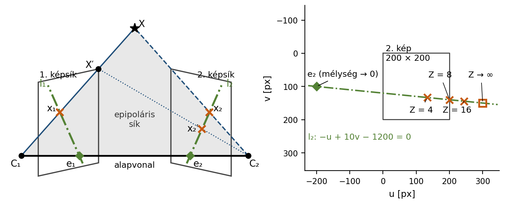
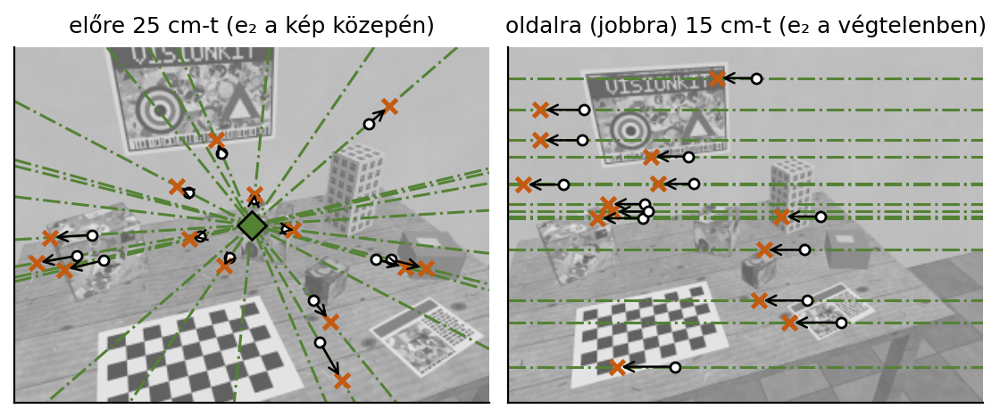

12.1 Két nézet: epipoláris
geometria és az alapmátrix
12.1.1 Motiváció: hol keressük a
párt?
A Leírók illesztése: távolságok, arányteszt és
közelítő keresés óta tudunk pontpárokat keresni két kép között:
minden jellemzőponthoz azt a másik képi pontot választjuk, amelynek a
leírója a legjobban hasonlít. Csakhogy a leíró téved: a futó jelenetben
az ablakrácsos torony minden ablaka egyforma, a textúra nélküli kék
doboz pontjai pedig mind hasonlítanak egymásra. A RANSAC segített kiszűrni a hibás párokat egy közös
modellel, de ott a modell homográfia volt, amely csak síkra vagy tisztán
elforgatott kamerára érvényes.
Mi köti össze két tetszőleges kamera képeit egy
térbeli jelenetben? Ha az első képen kijelölök egy
pontot, a második képen hol lehet a párja? A válasz meglepően erős: a
pár nem lehet akárhol, hanem egyetlen egyenes mentén
kell lennie, bármilyen távol is van a pont a térben. Ezt az egyenest egy
-as
mátrix adja meg. Ez a fejezet a kétnézetes geometria alapköve: erre épül
a A normalizált 8-pontos algoritmus, az Esszenciális mátrix, 5-pontos algoritmus és a póz
kinyerése, a Sztereó rektifikálás és
diszparitás és minden rekonstrukció.
12.1.2 Szemlélet: egy sugár képe
egyenes
Egy képpont nem egy térbeli pontot határoz meg, hanem egy
sugarat: az első kamera középpontján
()
és a pixelen át futó félegyenest (Lyukkamera-modell: belső és külső paraméterek). A
keresett 3D pont ezen a sugáron van, csak a mélységét nem ismerjük. A
második kamera ezt a sugarat látja, és egy egyenes képe (lyukkameránál,
torzítás nélkül) egyenes. Tehát az összes lehetséges pár egy egyenesen
van a második képen.
Ugyanez síkkal elmondva: a két kameraközéppont és a térbeli pont
három pont, ezek egy síkot feszítenek ki. Ez a sík mindkét képsíkot
egy-egy egyenesben metszi. A pont mindkét képe ezeken a metszésvonalakon
van.

Az epipoláris sík vázlata, és a kézi számpélda második képe:
a sugár pontjainak vetületei egy egyenesen
Definíció. Két, különböző középpontú kameránál:
alapvonal (baseline): a
szakasz (egyenese);
epipólus (epipole):
a második kamera középpontjának képe az első képen,
az első kamera középpontjának képe a második képen – az alapvonal
döféspontjai a képsíkokon;
epipoláris sík (epipolar plane): egy, az
alapvonalat tartalmazó sík (minden térbeli ponthoz egy ilyen);
epipoláris egyenes (epipolar line): az epipoláris
sík és egy képsík metszésvonala.
Mivel minden epipoláris sík tartalmazza az alapvonalat,
minden epipoláris egyenes átmegy az epipóluson. A képen
az epipoláris egyenesek egy sugársort alkotnak az epipólus körül; maga
az epipólus akár a képen kívül, akár a végtelenben is lehet.

Epipoláris egyenesek előre haladó és oldalra mozgó
kameránál: az egyik sugarasan indul a kép közepéből, a másik
vízszintes
Az ábrán az üres kör a pont helye az első képen, a narancs kereszt a
másodikon, mindkettőt a második képre rajzolva. Előre haladva a pontok a
kép közepéből (az epipólusból) sugarasan kifelé csúsznak; oldalra
mozogva vízszintesen, ellentétes irányba. Ugyanezt láttad vonaton ülve
vagy autóból kinézve.
12.1.3 Az epipoláris kényszer
kalibrált kamerákkal
Legyen a két kamera közötti relatív póz
:
az első kamera koordinátáiban adott
pont a második kamerában
Ha a pózokat a világhoz képest
ismerjük,
és
,
akkor
és
(3D forgatások és merevtest-transzformációk; a
kódban camera.relative_pose). A normalizált képkoordináták
(3 elemű, harmadik koordinátájuk 1), és
,
ahol
a mélység. Behelyettesítve:
Két ismeretlen mélységet kell
kiejtenünk.
Vektoriális szorzás
-vel
balról. Mivel
,
a
ferdeszimmetrikus mátrixszal
Skaláris szorzás
-vel.
A bal oldalon
,
mert a vektoriális szorzat merőleges mindkét tényezőjére. Marad
Mivel
,
oszthatunk vele:
Szavakban: a három vektor – a második sugár iránya, a
alapvonal és az elforgatott első sugár iránya – egy síkban
van, ezért a vegyes szorzatuk nulla. Az
az esszenciális mátrix (essential matrix);
tulajdonságaival és a póz visszanyerésével a Esszenciális mátrix, 5-pontos algoritmus és a póz
kinyerése foglalkozik. Figyeld meg, hogy a mélységek eltűntek: a
kényszer minden mélységre ugyanaz.
12.1.4 Pixelekben: az
alapmátrix
A gyakorlatban pixelkoordinátákat mérünk. A
helyettesítéssel
Definíció. Az
a két kamera alapmátrixa (fundamental matrix),
-as.
Az
egyenlet az epipoláris kényszer (epipolar
constraint).
Olvassuk kétféleképpen. Rögzített
mellett
egy háromelemű vektor, tehát egy egyenes (Homogén
koordináták: pontok, egyenesek és végtelen távoli elemek), és a
kényszer azt mondja, hogy
ezen az egyenesen van:
.
Fordítva,
az
-höz
tartozó egyenes az első képen. Egy
pont távolsága egy
egyenestől
;
ezért az egyeneseket célszerű
-re
normálni (twoview.epipolar_lines ezt teszi).
az
sugarának két pontja: az első középpont,
(amelyre
),
és a
pont, ahol
a pszeudoinverz
(,
tehát ez a pont valóban
-re
vetül);
e két pont képe a második kamerában:
és
;
a két képponton átmenő egyenes a vektoriális szorzatuk:
.
Ebből
Szavakban: az
pontot egy tetszőleges módon átvisszük a második képre, majd összekötjük
az epipólussal. A két képlet skálázásig ugyanazt az
-et
adja.
12.1.5 Az alapmátrix
tulajdonságai
Rang 2. A
rangja 2 (a null-tere a
irány),
és
invertálható, tehát
,
és
.
Az epipólusok a null-terek:
és
.
Valóban:
,
ahol
a második középpont az első kamerában; ekkor
.
Szemléletesen: az
sugara maga az alapvonal, ennek a képe a második kamerában egyetlen pont
(),
így nem határoz meg egyenest. Hasonlóan
.
7 szabadsági fok. Kilenc elem, mínusz a skála
(
ugyanazt a kényszert adja), mínusz a
feltétel.
Szerepcsere: ha a két képet felcseréljük, az
alapmátrix
.
Pontból egyenes, nem pontból pont. Az
nem invertálható, és egy ponthoz nem egy párt, hanem egy egyenest
rendel. A kényszer szükséges, de nem elégséges: az
epipoláris egyenesen bármelyik pont teljesíti, a hibás illesztés is, ha
véletlenül az egyenesen van.
Mélység a vonalon: az
sugár pontjai az egyenesen
-től
(nulla mélység) a végtelen távoli pont képéig,
-ig
sorakoznak. A pozíció a mélységet kódolja; ezt használja a Trianguláció és a sztereó.
12.1.6 Speciális mozgások
Tiszta eltolás
(,
azonos
).
Egy invertálható
mátrixra
(az 5. feladat), ezért
választással
Az
ferdeszimmetrikus, és
azt jelenti, hogy
,
és az epipólus egy egyenesen van: a pontok az epipólus felé vagy attól
el mozognak. Előre haladásnál
,
tehát az epipólus a főpont; oldalirányú mozgásnál
,
az epipólus a végtelenben van, és a kényszer
(3. feladat). Figyeld meg, hogy a mozgás hossza nem szerepel: az
egyeneseket csak az irány határozza meg.
Tiszta forgatás
().
Ekkor
és
:
nincs alapvonal, nincs epipoláris sík. A két kép között a mélységtől
független homográfia áll fenn,
,
(Képtranszformálás, rektifikálás és panoráma).
Ha csak a megfeleltetéseket ismerjük, akkor bármely
teljesíti a kényszert, mert
,
hiszen
párhuzamos
-vel.
Az
tetszőleges, tehát
nem határozott: zajos adatból egy véletlenszerű mátrix
jön ki. Ugyanez a helyzet, ha minden pont egy síkon van
(a sík homográfiát ad). Ezt a degenerációt a A
normalizált 8-pontos algoritmus fejezetben mérjük ki.
Legyen
,
a főpont
,
mindkét kamerára ugyanaz a
.
A második kamera az első koordinátáiban a
pontban áll, és
,
szöggel befordul balra, hogy a
pontra nézzen:
1. lépés:
.
sorai
,
,
.
Balról szorozva
-rel,
a sorok
sorainak kombinációi: az első
,
a második
,
a harmadik
:
2. lépés:
.
sorai
,
,
.
Az
szorzást elvégezve és
-gyel
beszorozva (a skála szabad):
3. lépés: egy pont. Legyen
.
Az első képen
.
A második kamerában
,
azaz
.
4. lépés: az egyenes. A fenti egész mátrixszal
,
azaz
.
Behelyettesítve
-t:
.
Teljesül. Visszafelé
,
és
.
✓
5. lépés: epipólusok.
és
.
Mindkettő a
-as
képen kívül van.
átmegy
-en
(),
pedig
-n
().
6. lépés: mélység a sugáron. Az
sugár pontjai
.
A
pont a második képen
,
a
a
,
a
a
pontra vetül, a végtelen távoli pont pedig
-re,
a
pontra. Mind rajta vannak
-n
(ezt mutatja a fenti vázlat jobb oldala); a nulla mélység felé a vetület
-höz
tart.
A harmadik szinguláris érték nulla: az
rangja 2. A másik kettő között több nagyságrend a különbség, mert a
pixelkoordináták (százak) és a homogén 1-es nagyságrendje eltér –
ugyanez okozza majd, hogy a pontokat A normalizált
8-pontos algoritmus előtt normalizálni kell. Most a futó jelenet két
nézete (a camera_path(12) 3. és 8. póza,
,
):
forgás 37.64°, alapvonal 0.721 m
e1 = [1970.3 464.7] e2 = [-1186. -474.2]
legnagyobb pont–egyenes távolság: True
a két képlet egyezik: True
A pontpárok pontosan az egyenesükön vannak, és a vetítési mátrixokból
számolt
skálázásig azonos a pózokból számolttal. Mindkét epipólus messze a képen
kívül van, ezért az egyenesek közel párhuzamosnak látszanak. Végül a két
degeneráció számszerűen:
fwd = (P1[0], P1[1] - np.array([0, 0, 0.25])) # 25 cm előreFf = twoview.fundamental_from_poses(P1, fwd, K)print("előre: F ferdeszimmetrikus:", np.abs(Ff + Ff.T).max() <1e-12)Ry = camera.rot_y(np.radians(10))rot = (Ry @ P1[0], Ry @ P1[1]) # tiszta forgatásc = scene.correspondences(P1, rot, n=100, seed=2)H = K @ Ry @ np.linalg.inv(K)print("forgás: x2 ≃ H x1, max átviteli hiba < 1e-9:", geometry.transfer_error(H, c["x1"], c["x2"]).max() <1e-9)rng = np.random.default_rng(0)for k inrange(3): F_any = camera.skew(rng.standard_normal(3)) @ H # tetszőleges eprint(f" [e]× H, {k +1}. e: max Sampson-hiba < 1e-9:", twoview.sampson(F_any, c["x1"], c["x2"]).max() <1e-9)
előre: F ferdeszimmetrikus: True
forgás: x2 ≃ H x1, max átviteli hiba < 1e-9: True
[e]× H, 1. e: max Sampson-hiba < 1e-9: True
[e]× H, 2. e: max Sampson-hiba < 1e-9: True
[e]× H, 3. e: max Sampson-hiba < 1e-9: True
Három teljesen véletlen
mellett is tökéletesen teljesül a kényszer: tiszta forgatásból az
nem állítható vissza. A Sampson-hiba az epipoláris távolság egy
változata, a következő alfejezetben vezetjük be.
12.1.9 Próbáld ki
Statikus változat (mint a PDF-ben)
A futó jelenet két nézete: az első kép hat pontjának
epipoláris egyenesei a második képen
Az interaktív ábrán a bal kép az első kamera képe, a jobb a második
kamera egyszerűsített rajza, alatta a 3D elrendezés. Kattints a bal
képen egy pontra.
Mélység a sugáron. Alapállásban a középső kocka
teteje van kijelölve (valódi mélysége
m). Húzd a „pont a sugáron” csúszkát
-től
m-ig: a narancs kereszt végigfut a zöld egyenesen, és
m-nél esik a valódi pont (üres kör) helyére. A 3D ábrán közben a pont a
sugáron mozog, az epipoláris háromszög pedig vele együtt nyílik.
Előre haladás. Válaszd az „előre megy” módot, és
kapcsold be az öt további pont egyeneseit. Az epipólus a kép közepén,
van. Változtasd az elmozdulást: az egyenesek nem
mozdulnak, csak a pontok csúsznak rajtuk. Miért? (Mert
csak az iránytól függ.)
Oldalmozgás. Az „oldalra” módban az egyenes
vízszintes,
,
az epipólus a végtelenben van. Melyik irányba mozog a közeli pont a
távolihoz képest? (A nagyobbat balra.) Ez a sztereó látás alapesete (Sztereó rektifikálás és diszparitás).
Tiszta forgatás. A „csak elfordul” módban
:
a sugár összes pontja ugyanarra a képpontra vetül, nincs egyenes. Ezzel
a mozgással mélységet nem lehet mérni.
12.1.10 Tipikus hibák
Fordított szereposztás. Tünet: a pontok tíz–száz
pixelre vannak az „epipoláris egyenesüktől” (a futó jelenetben
helyett
-tal
a medián kb.
px). Ok:
-t
számoltál, vagy
-et.
Javítás: rögzítsd, hogy
,
,
.
Kameraközéppont a
helyén. Tünet: a forgás helyes, az egyenesek mégis rosszak (a
futó jelenetben kb.
px medián). Ok:
.
Javítás:
az
konvencióban.
pixelkoordinátákon. Tünet: értelmetlen egyenesek (itt kb.
px medián). Ok:
a normalizált,
a pixeles koordinátákra való; a kettő nem cserélhető fel. Javítás:
,
vagy a pontokat előbb
-gyel
szorozd.
Normálatlan egyenes. Tünet: a „távolság”
nagyságrendekkel téves. Ok:
csak
mellett pixeltávolság. Javítás: osztás
-tel.
Az epipoláris egyenes = a pár. Tünet: a kényszer
alapján „jó” párok között hibásak is maradnak. Ok: egy 1D feltétel nem
szűri ki az egyenes mentén elcsúszott illesztést. Javítás: leíró,
arányteszt, harmadik nézet.
forgásból vagy síkból. Tünet: a becsült
a tanító pontokon jó, újakon rossz. Ok: degeneráció. Javítás:
ellenőrizd, hogy egy homográfia nem magyarázza-e a párokat.
12.1.11 Önellenőrzés
Miért megy át minden epipoláris egyenes az epipóluson?
Mi
,
és mit jelent ez geometriailag?
Hány szabadsági foka van
-nek,
és miért?
Az
pont pontosan az
egyenesen van. Következik-e ebből, hogy helyes pár?
Mi történik az
-fel,
ha a második kamera csak elfordul?
12.1.12 Feladatok
(A) A kézi példa
mátrixával számítsd ki az
(a főpont) epipoláris egyenesét a második képen. Ellenőrizd, hogy átmegy
-n. Milyen
irányú, és miért?
(A) Számítsd ki a kézi példa
epipólusát az
első két sorának vektoriális szorzatából, és indokold, miért működik
ez.
(B) Vezesd le az
-et
tisztán oldalirányú mozgásra:
,
,
azonos
().
Milyen egyenesek az epipoláris egyenesek?
(B) Előre haladó kameránál
()
mutasd meg, hogy
,
és a főpont egy egyenesen van.
(C) Bizonyítsd be, hogy invertálható
-re
.
Segítség:
.
(C, programozás) A futó jelenet két nézetén
generálj 300 megfeleltetést
px zajjal és
kiugró aránnyal (seed=4). Szűrd azokat, amelyek az ismert
szerinti
egyenestől legfeljebb
px-re vannak. Mennyi belső és mennyi kiugró pont marad? Miért nem nulla
az utóbbi?
12.1.13 Rövid összefoglaló
Két kamera középpontja és egy térbeli pont epipoláris
síkot alkot; ennek metszete a képsíkokkal az epipoláris
egyenes, és minden ilyen egyenes átmegy az
epipóluson (a másik középpont képén). A
relatív pózból
,
,
pixelekben
,
;
vetítési mátrixokból
.
Az egyenesek:
,
.
rangja 2, 7 szabadsági fok,
,
.
Tiszta eltolásnál
;
tiszta forgatásnál vagy síkbeli jelenetnél
nem határozható meg, homográfia írja le a kapcsolatot.
12.1.14 Megoldások
12.1.14.1 Válaszok az önellenőrző
kérdésekre
Minden epipoláris sík tartalmazza az alapvonalat, tehát a képsíkkal
vett metszete tartalmazza az alapvonal döféspontját, az epipólust.
:
az
sugara az alapvonal, amelynek a másik képe egyetlen pont
(),
így nem tartozik hozzá egyértelmű egyenes.
Hét: a 9 elemből egy a skála, egy a
feltétel.
Nem. A feltétel szükséges, de nem elégséges: az egyenes bármely
pontja teljesíti.
,
ezért
;
a képeket a mélységtől független
homográfia kapcsolja össze, a megfeleltetésekből
nem határozható meg.
12.1.14.2 A feladatok
megoldásai
1.
,
azaz
:
vízszintes.
rajta van. Azért vízszintes, mert a főpont sugara az első kamera optikai
tengelye, amely az
síkban halad, ahogy a két középpont is; az epipoláris sík ez a
vízszintes sík, amelynek képe a
sor.
2.
merőleges
minden sorára
(),
tehát két független sor vektoriális szorzata adja:
.
3.
,
és
.
Így
Az epipoláris egyenesek a képsorok:
.
4.
,
tehát
a
főponttal.
:
a három homogén pont lineárisan függő, vagyis egy egyenesen van.
5. Tetszőleges
-re
.
Mivel ez minden
-re
igaz, a két mátrix egyenlő.
A belső pontok szinte mind megmaradnak (a
px zaj ritkán visz
px-nél messzebb). A kiugrók közül itt egy véletlenül egy
px széles sávba esik az egyenes körül – az epipoláris kényszer 1D
feltétel, az egyenes mentén elcsúszott hibát nem látja. Minél hosszabb
az egyenes a képen és minél szélesebb a sáv, annál több kiugró csúszik
át.